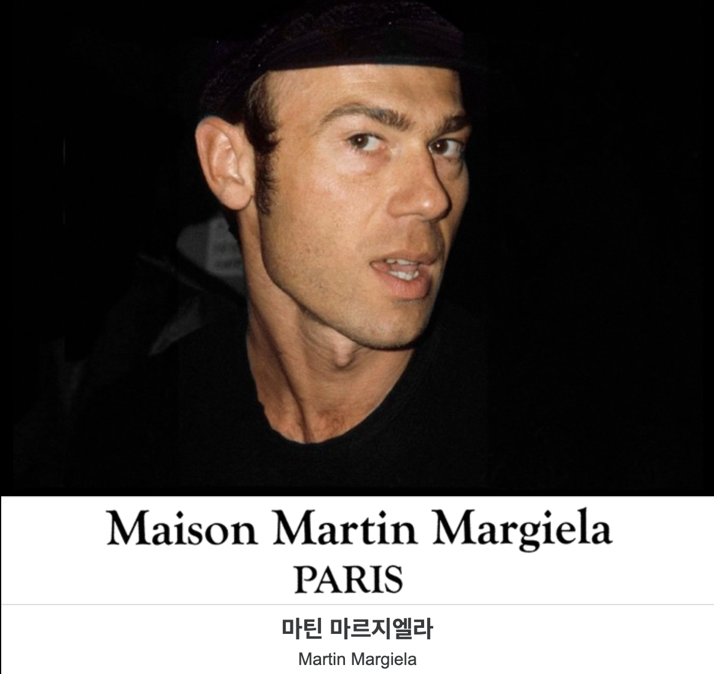

- Founder
- Brand About
- Logo
- Domestic Stores

출생
1957년 4월 9일. 벨기에 플랑드르 림부르흐 지역에서 가발과 향수 사업을 하는 집안의 아들로 태어났다.
특징
1997년, 에르메스의 장 루이 뒤마 회장에게 발탁되어 에르메스의 크리에이티브 디렉터로 임명되었으며, 장 루이 뒤마 회장은 그를 두고 '명마를 위한 훌륭한 기수'라고 칭하기도 하였다. 실제로, 재직 기간 그는 에르메스를 위한 고급스러움과 에르메스의 전통개념을 이어가면서도 자신의 테일러링 실력을 발휘하였는데, 특히 가죽과 캐시미어 사용에서 절대적인 질과 우수성을 보증받기도 하였다.
그는 극도로 얼굴이나 자신이 노출되는 것을 꺼리기 때문에, 실제로 아틀리에에서 일하는 직원들도 그의 얼굴을 본 적이 없으며, 극히 가까운 일부 지인들을 제외하고는 그의 존재를 본 적도, 마주친 적도 없다고 한다.
수수께끼 같은 패션 디자이너, 마틴 마르지엘라(Martin Margiela, 1957.4.29~)는 기본적인 것만 남은 기능주의 미학과 함께 ‘해체주의’라는 새로운 패션을 도입함으로써 기존의 패션의 관습에 도전하였다. 의복 구성의 형식을 파괴한 이 개념적 디자이너는 노출된 솔기, 마무리하지 않은 단 처리, 구조의 해체와 재활용 등을 통해 익숙한 의복을 입는 새로운 착장 방식을 보여주었을 뿐 아니라, 의복의 생산과정을 노출함으로써 새로운 스타일을 발명한 위대한 혁명가로 남아있다.